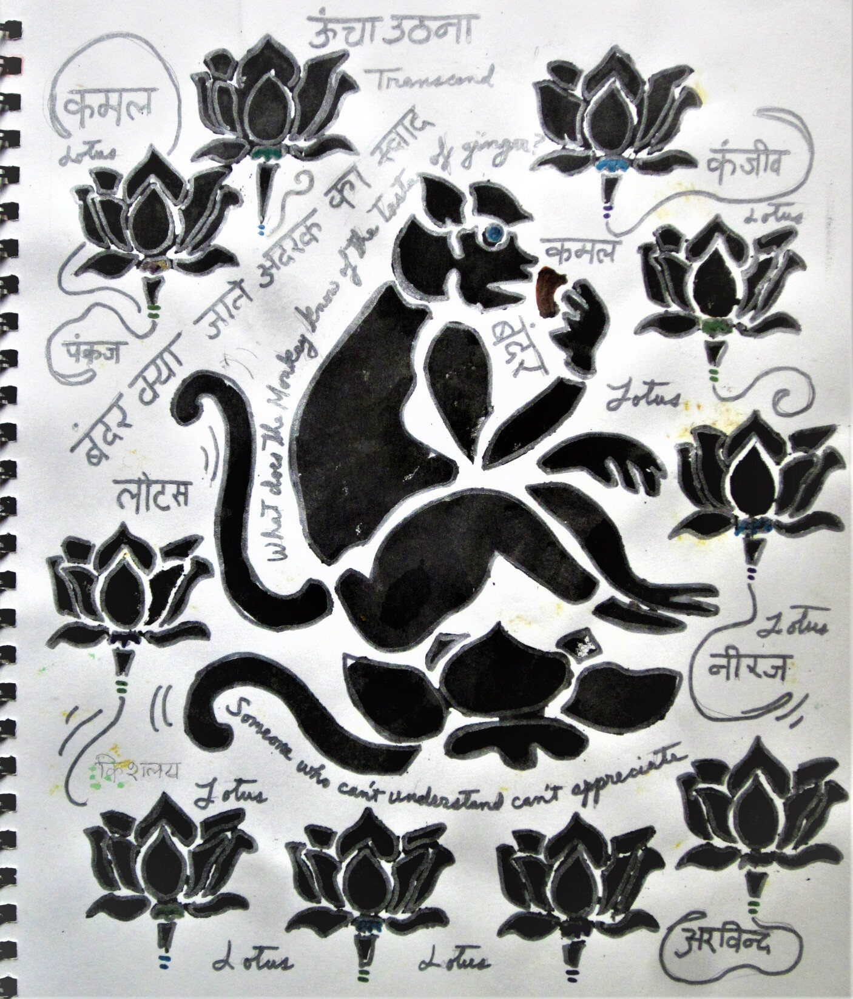

Wealth in Wilted Flowers
The pressed mala flowers framing Ganesh cost nothing—discarded temple offerings reborn as art. In India, where 60 million live on less than ₹150/day (World Bank 2023), beauty persists: in chai-seller’s smiles, in roadside marigolds, in the patience of hands stringing jasmine for gods and strangers alike. As Kabir wrote: "The ruby’s glow exists, even unseen in the dark" (Bijak).
Two-Sided Abundance
The reversible Ganesh—green felt on tie-dye—proclaims: sacredness has no price tag. Village women stitch such textiles while singing bhajans, their wealth measured in devotion, not rupees.
The Taittiriya Upanishad teaches "Satyam, Jñānam, Anantam Brahma"—truth, wisdom, and infinity are the real riches. A lesson my souvenir-hunting travel companions missed entirely.
The Monkey’s Real Feast
Amid the clamor for souvenirs they bartered for pashminas, I drew enlightenment in simian form—a mango-juice-dripping, market-ignoring sage.The Bhagavad Gita whispers: 'Work is your birthright; rewards are not.

Be Patient, Stay Open
Beauty thrives where materialism starves. The Hindi script roots (like the Aranyakas’ forest wisdom) whisper: "Possess little, experience much."
Some people only see souvenirs—shiny things to buy and take home. That’s okay. We all start somewhere. But if you stay curious, you’ll discover better treasures:
* The way a stranger’s laugh sounds like wind chimes
* The perfect heaviness of a ripe mango in your palm
* That moment when you realize this is what rich really feels like
The world keeps offering its gifts. You don’t need money—just open hands, open eyes, and an open heart.
Be kind to those still learning. But don’t wait for them—the sun is rising now, and it’s free for everyone.

Richard Diaz
Art is a riddle in three parts: subject is the question, form the structure of thought, and content the elusive answer. To solve it, you must interrogate not just the visible, but the voids between—where meaning lingers, half-hidden, waiting to be found.